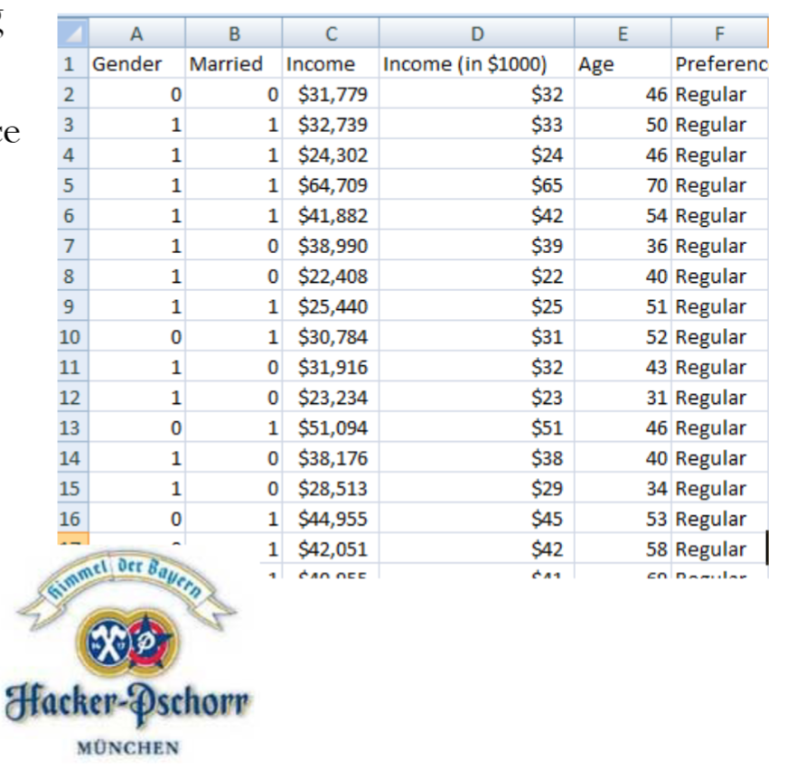
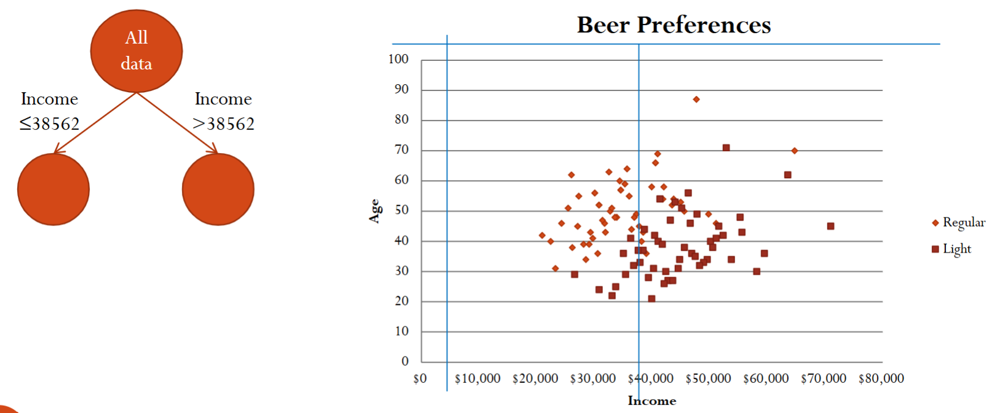
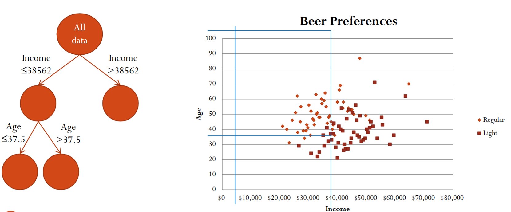
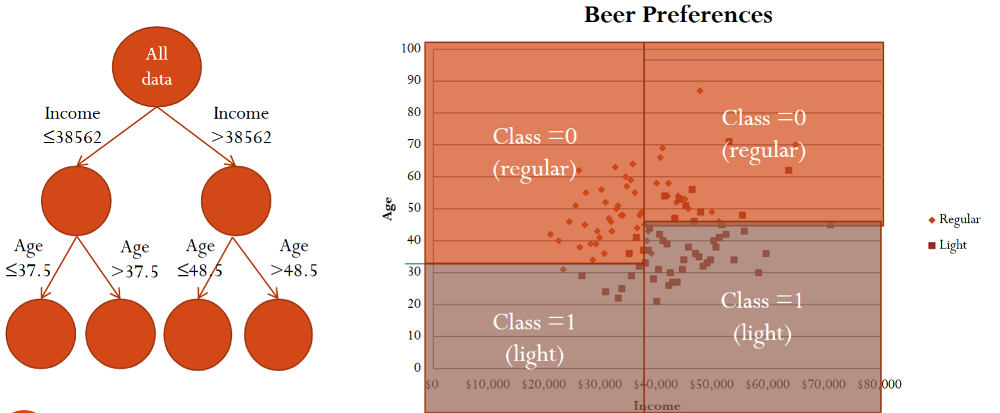
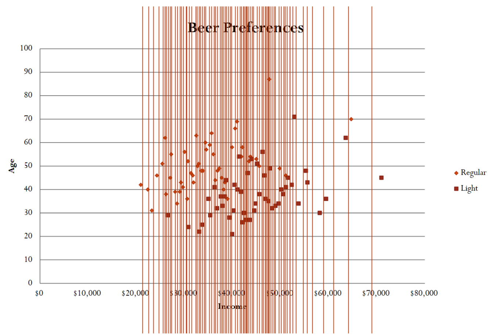
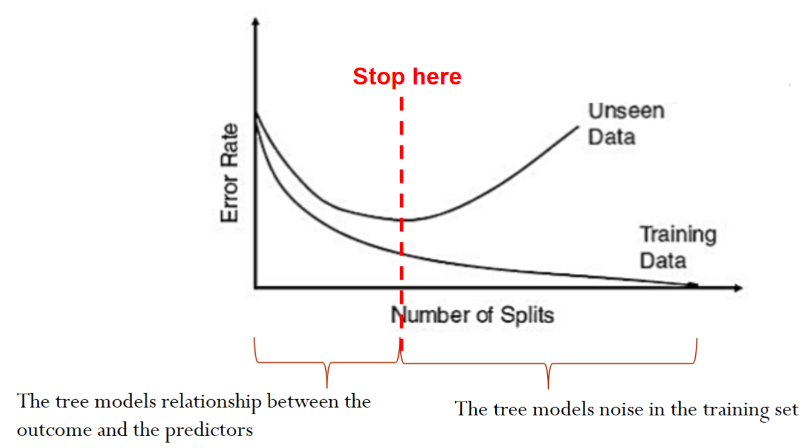
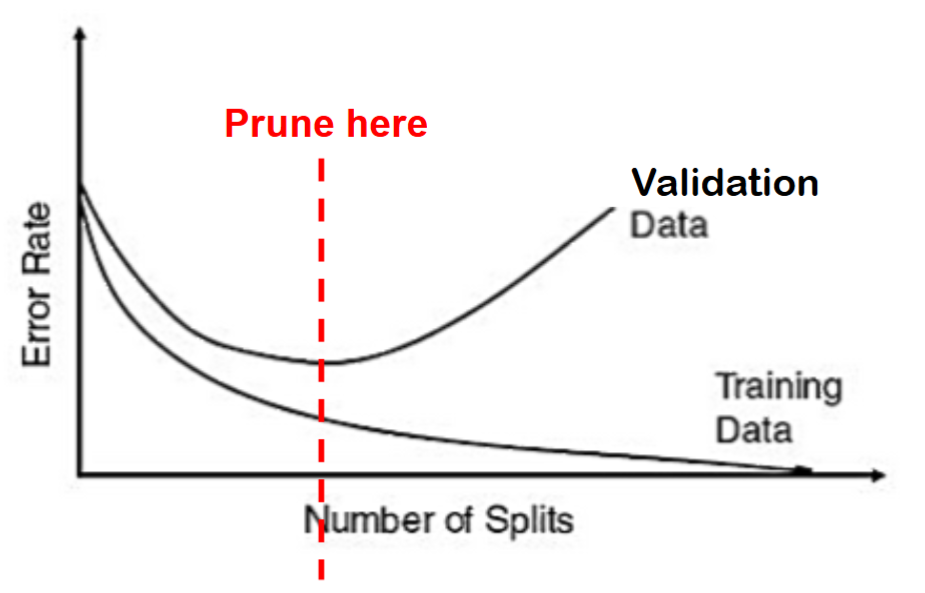
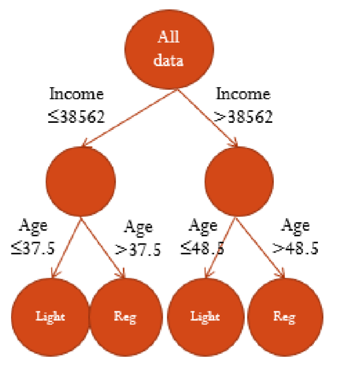

1.1. Type of Trees
There are two type of tree models, designed for different types of response variable.
In this course, we have used the following data sets and its associates machine learning methods.
iris: knn, kmeans.
Boston housing: linear regression, LASSO, ridge regression, regression tree.
German credit, bankruptcy, credit card: logistic regression, classification tree.
1.2. Classification Trees
1.2.1. Example
Let’s look at a simple example, beer preference.
Hacker Pschorr is one of the oldest beer brewing companies in Munich. It collects data on customers’ beer preference (light/regular) and their demographic information. Its goal is to determine demographic factors for preferring light beer. For simplicity, let’s first focus on only two predictors income and age.
This is essentially a classification problem (binary: light or regular) using two predictors (income and age). Below is a snapshot of the data.

Let’s try to find the relationship between the response variable, beer preference (i.e., light/regular), and the predictors (income and age).
Since there are only two predictors, we can visualize the data using a scatter plot with the symbol shape representing the label.
Based on the scatterplot, we can recursively separate the records into subgroups by creating splits, i.e., thresholds, on the predictors. This splitting of the data set can be visualized as trees.

After the first split, we can further split using another predictor.

Finally, after three splits, we essentially divide the xy-plane into for different regions.

There are still some questions. For example, how to choose the split variable and its value? When should we stop growing the tree? What rule do we use for classification/prediction in the end nodes? How do we classify a new record? Below we answer these questions one by one.
1.2.2. Determining the Best Splits
What do we mean by “best”?
We want to find the split that best discriminates between records of different classes.
After the split we want the new sub-nodes to be more homogenous or purer than their parents nodes.
Therefore, we need a measure of homogeneity/purity!
There are two commonly used measures for homogeneity:
Definitions are beyond the scope of this course.
The classification and regression trees (CART) algorithm evaluates all possible binary splits.
For each variable, each possible split value is tried.
Select the best variable-value split.
Below is an example of searching for the best split value for the income variable.

1.2.2. When to Stop Growing Trees?
One option is to stop when we can no longer find a split that improves the impurity measures.
There is a chance of overfitting if we keep splitting the data until we only have very few points at each node
The goal is to arrive at a tree that captures the patterns but not the noise in the training data, therefore maximizing the prediction accuracy on new data

We can set up different stopping rules to avoid overfitting.
Set a minimum number of records at a node.
Set a maximum number of splits.
Statistical significance of the split.
There is no simple good way to determine the right stopping point (depends on the dataset)
Instead of stopping rules, we can use pruning to avoid overfitting.
Pruning refers to using the validation sample to prune back (cut branches off) the full grown tree.
Pruning has been proven more successful in practice than stopping rules
Note, pruning uses the validation sample to select the best tree: the performance of the pruned tree on the validation data is not fully reflective of the performance on completely new data.

1.2.3. Prediction
To use the tree models to make prediction for a new observation, we simply need to “walk” down the tree using this observation’s predictors and find the end node that this observation falls into, and use the end node’s class to predict for this observation.
However, we need to assign a predicted class for each end node.
The default to assign a class to end node is the majority vote.
In the 2-class case: majority vote corresponds to setting the cutoff to 0.5
Changing the cutoff will change the labeling
Now, let us decide how to classify a 40 year old person with $40,000 in annual income.

Converting a Tree into Rules
We can translate the tree into decision rules
If Income is less than or equal to $38,562 and Age <37.5 then we predict the person to like light beer.
If Income is less than or equal to $38,562 and Age is greater than 37.5 then we predict the person to prefer regular beer.
Classification and Regression Trees
Highly Interpretable
Supervised learning
Nonlinear
R: rpart (recursively partitioning trees)